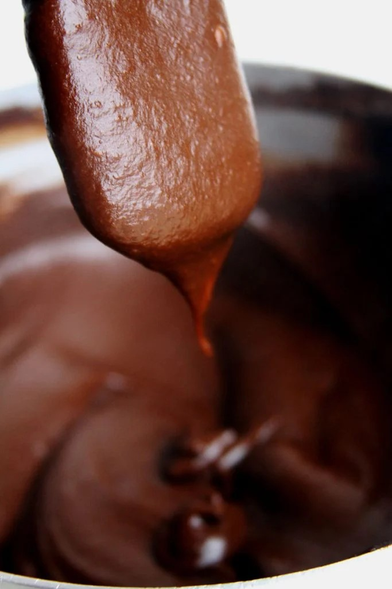

Ingredientes
2 1/2 xícaras de abóbora assada (650 gramas)
(cerca de 40minutos, ou até estar macia. Não cozinhe)
(O que sobrar, congele para utilizar depois)
500 ml de leite de coco
1/2 xícara de cacau em pó 100% (45 gramas)
1/4 xícara de polvilho doce (30 gramas)
1 xícara de açúcar mascavo (170 gramas)
1 Pitada de sal (opcional, mas realça os sabores)
1 colher de chá de canela (opcional)
1/2 colher de sopa de essência de baunilha (7,5 ml – opcional)
20 gramas de chocolate 85% ralado para decorar (opcional)
Preparação
Bata no liquidificador a abóbora, o leite de coco, o cacau e o polvilho doce. Se o seu liquidificador não for tão potente deixe o cacau para misturar depois, meu liquidificador tem 550W de potência e deu conta do recado.
Transfira o creme para uma panela e adicione o açúcar, o sal e a canela.
Ligue a penela em fogo médio baixo e mexa constantemente por aproximadamente 10-15 minutos. Você vai perceber que o musse de chocolate vegano vai ficar mais grosso, consistente e quando você raspar o fundo da panela vai formar um caminho.
Quando o musse de chocolate vegano estiver na consistência ideal desligue o fogo e adicione a baunilha, se você adicionar no começo ela evapora.
Essa é a textura esperada
(ao passar a colher, a massa demora um pouquinho para preencher o espaço)

Transfira para uma travessa ou sirva em potes individuais de sobremesa.
Leve para geladeira por umas 3 horas ou se estiver com pressa coloque no freezer por aproximadamente 1 hora.
Depois de frio decore com raspas de chocolate.
Notas
Use o leite vegetal da sua preferência.
Substitua o polvilho doce por amido de milho ou araruta.
Substitua o açúcar mascavo por qualquer açúcar ou adoçante da sua preferência.
Ao invés de aromatizar com baunilha você pode aromatizar o musse de chocolate vegano com 2 colheres de sopa da bebida alcoólica da sua preferência, use rum, conhaque, whisky ou qualquer licor que tenha em casa.
Você pode adicionar 1/2 xícara da oleaginosa picada da sua preferência, nozes, castanhas, amendoim ou a que você gostar mais.
https://youtu.be/Bc9tdof8KBM
Nutrição
Fat: 13,7 gramas
Calories: 225 calories
Saturated Fat: 11,6 granas
Unsaturated Fat: 1 grama
Sodium: 1%
Fiber: 18%
Cholesterol: 0%
Carbohydrate: 9%
Sugar: 18,3 gramas
Serving Size: 10 porções
Trans Fat: 0%
Protein: 6%